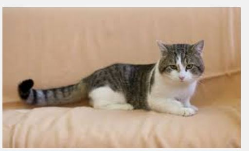
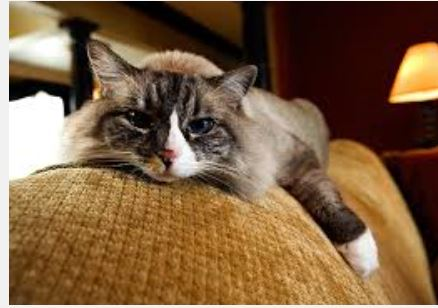

katt!
As cats have such specific needs it isn’t enough just to provide some food, shelter and love. While these elements are as important as ever to your cat, it is the quality and quantity of each that is the key. There are practical challenges about the provisions you make for your cat in the home: What sort of cat bed should you provide? Where should you locate the scratching posts? What sort of litter facilities would your cat want?
A cat-friendly home is about compromises that you can make so that the environment suits you both. However, if you are a lover of contemporary minimalistic interiors you are probably going to have to adjust more than most to provide everything your cat needs. Open-plan living spaces with clean lines and an overall lack of clutter may be the basis of the modern style, but this couldn’t be further removed from your cat’s natural habitat. Although the domestic cat is highly adaptable to most landscapes, it still requires a degree of camouflage to enable it to roam relatively inconspicuously.
While discussing safety it is worth mentioning the greatest challenge to the cat's perception of security in the home. If cats have any access outdoors it may be facilitated via a cat flap. Cats often see the flap as a vulnerable point in the defences of their home where any invader could potentially gain access